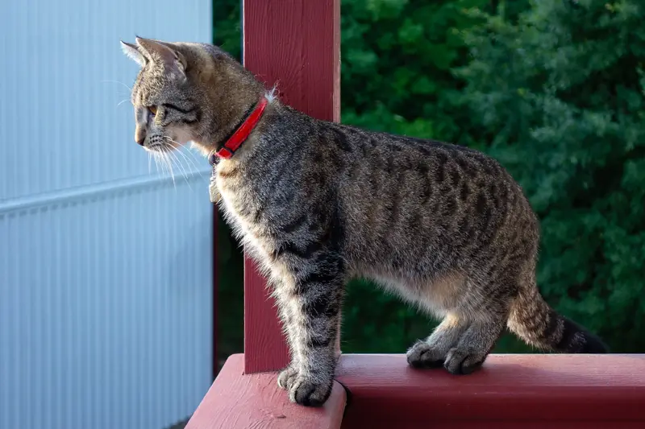
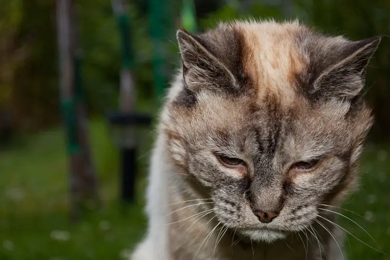
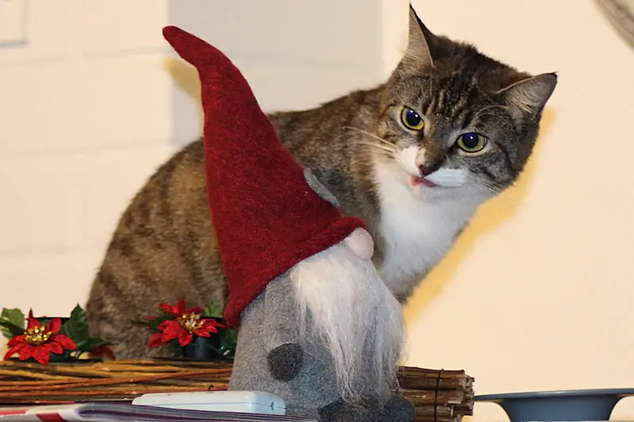
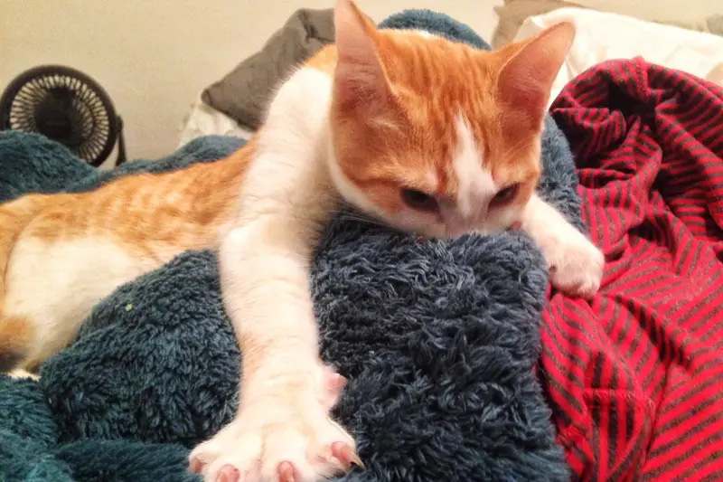

Pet care answers by Atulit
Pet care answers by AtulitCats
Sample answers about cats. Filter by topic below.

Questions

CatWhy is my cat throwing up?→
CatCan cats drink milk?→
CatWhy does my cat knead?→Sample answers about cats. Filter by topic below.


CatWhy is my cat throwing up?→
CatCan cats drink milk?→
CatWhy does my cat knead?→